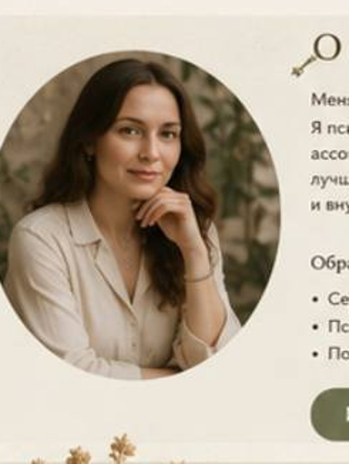
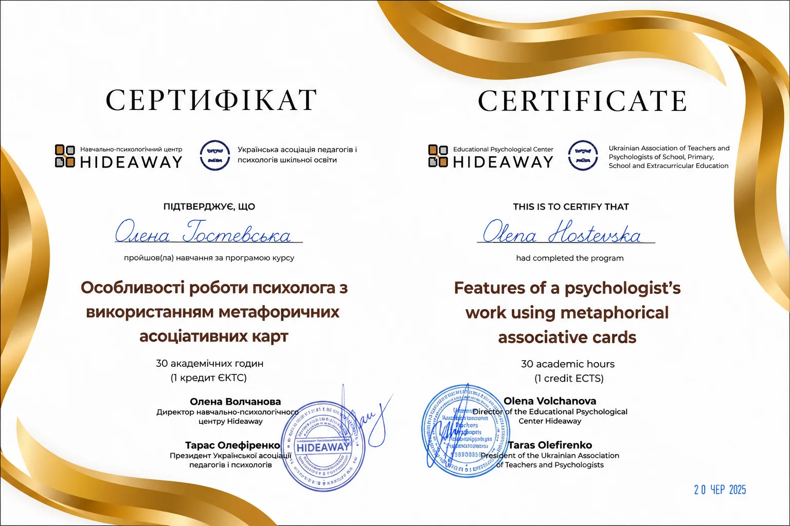
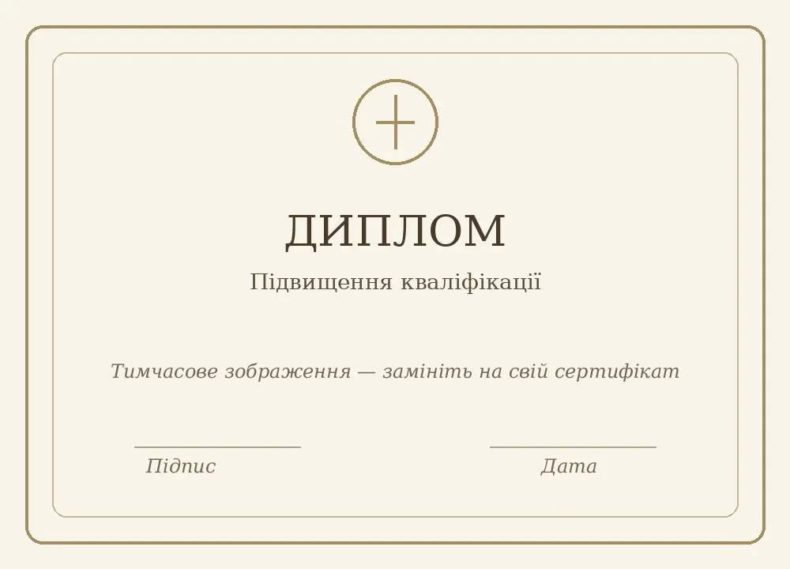

Про мене
Делікатна підтримка, уважність до вашого досвіду та робота у комфортному для вас темпі.

Вітаю, мене звати Олена
Я фахівець з метафоричних асоціативних карт, психосоматики, зцілення родових програм та роботи з негативними думками. У своїй роботі ціную делікатність, конфіденційність, уважність до людини та повагу до її внутрішнього темпу.
Я не даю готових відповідей і не оцінюю. Натомість допомагаю краще побачити ситуацію, почути себе, знайти внутрішні опори та обрати крок, який підходить саме вам.
Із чим я можу бути корисною
- емоційне виснаження та перевтома;
- складнощі у стосунках та спілкуванні;
- пошук ресурсу та внутрішньої опори;
- самооцінка, межі й упевненість у собі;
- періоди змін і важливих рішень.
Освіта та сертифікати


